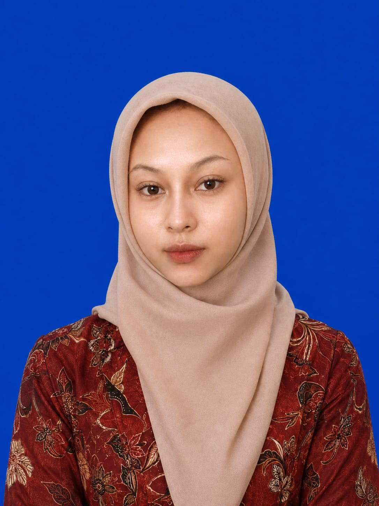

HTML & CSS
Struktur dan desain tampilan halaman web

Mahasiswa Teknik Informatika UMC
Saya adalah mahasiswa S1 Teknik Informatika di Universitas Muhammadiyah Cirebon yang memiliki ketertarikan pada pengembangan web, sistem informasi, dan Cyber Security. Saya senang mengeksplorasi teknologi, mempelajari hal-hal baru, serta mengembangkan ide menjadi solusi digital yang bermanfaat dan mudah digunakan.
Saya percaya bahwa setiap proses adalah kesempatan untuk bertumbuh. Dengan rasa ingin tahu, kreativitas, dan kemauan untuk terus belajar, saya berusaha mengembangkan kemampuan serta menciptakan karya yang bermakna. Prinsip hidup saya adalah Amor Fati, Fatum Brutum yang artinya mencintai takdir dan menerima kenyataan apa adanya, sembari tetap berusaha semaksimal yang saya bisa untuk menentukan arah masa depan.
Struktur dan desain tampilan halaman web
Pengembangan interaksi dan fungsionalitas web
Pemrograman berorientasi objek
Pemrograman dasar, logika, dan pengembangan aplikasi